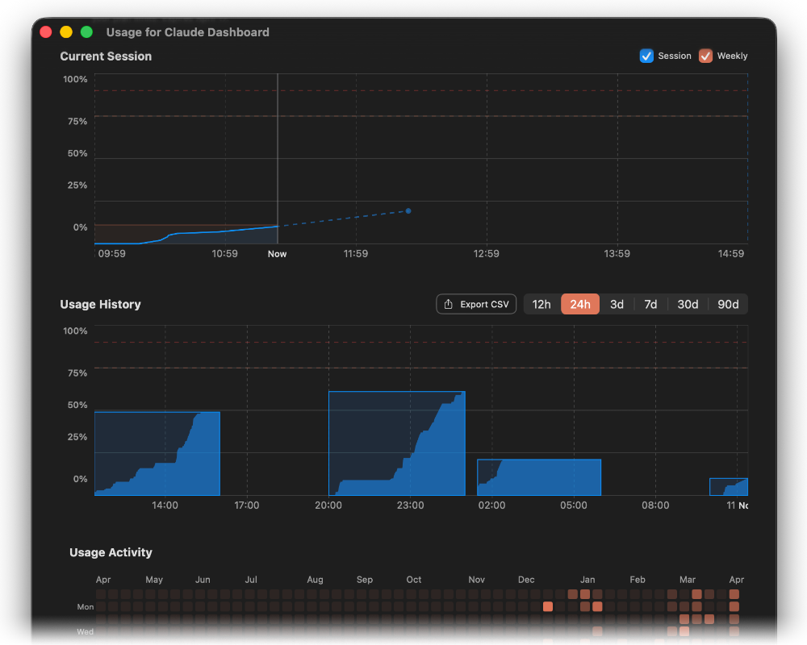
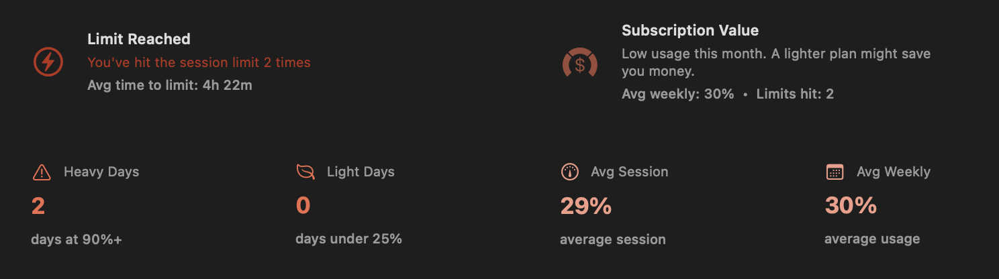
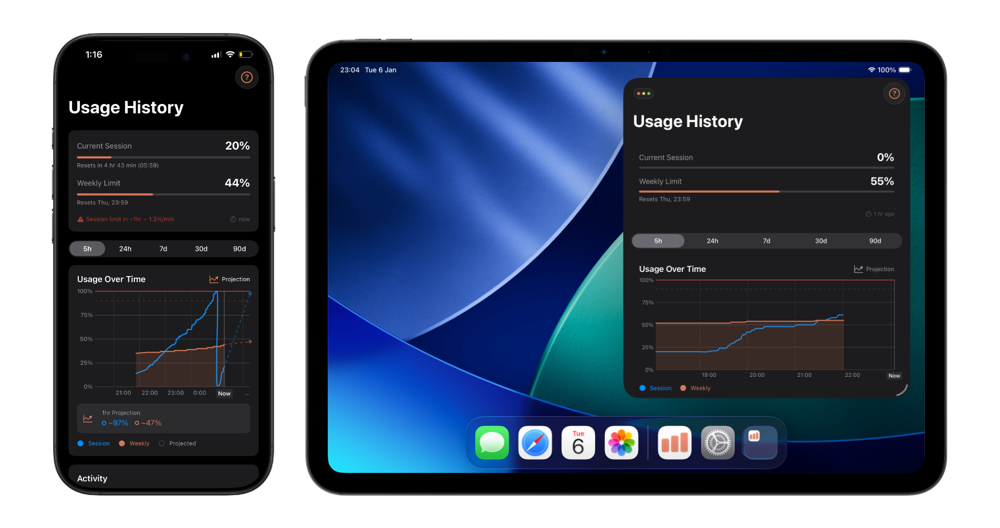
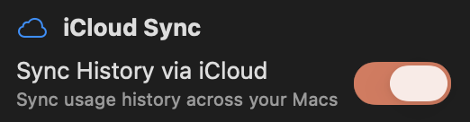

Usage for Claude
Track your subscription Usage.
Never hit your limits unexpectedly. Monitor your Claude subscription usage right from your menu bar with automatic tracking of both your current session and weekly limits. Get notified when you're approaching your limit so you can plan your work accordingly and never be caught off guard.
Download on the Mac App Store
Track your usage over time. The History view displays your Claude usage with interactive charts and a GitHub-style activity grid showing your usage patterns over the past year. Filter by time range, see trends in your session and weekly usage, and export your data as CSV for your own analysis.

Smart predictions and insights. Get intelligent predictions about when you might hit your limits based on your current usage rate. The Subscription Value insight analyzes your average weekly usage to help you understand how much of your Claude subscription you're utilizing.

View your usage anywhere. The companion apps for iPhone and iPad sync with your Mac to show your complete usage history. Check your current usage status, browse your activity grid, and stay informed—even when you're away from your computer. Available on the App Store

Seamless multi-Mac sync. Your usage history syncs automatically via iCloud. Switch between your Macs and always see your complete, unified usage history.
What's New
Version history ›Never miss out — get notified about off-peak hours, high-limit times, and credit offers from Claude, right in your menu bar.
Your usage history is now a complete dashboard with live session charts, usage bars, and status banners — everything at a glance.
Monthly usage insights with new metrics and a fresh card design to help you understand your usage patterns.
Browse your session history with an interactive bar chart. Filter by day or week to spot trends.
Also includes improved velocity detection to reduce false warnings, refined sign-in flow, and bug fixes.
Frequently Asked Questions
What is Usage for Claude?
Usage for Claude is a macOS menu bar application that displays your Claude usage statistics with automatic background updates. It authenticates with claude.ai and extracts usage data directly from your account, providing convenient access to your session and weekly usage limits without opening a browser.
Is this an official Anthropic application?
No, this is an independent third-party application built by an enthusiastic Claude user out of love for the product and to help the Claude user community. It is not created, endorsed, or maintained by Anthropic.
What accounts are supported?
The app works with any Claude account (Free or Pro) that has access to the usage page at claude.ai/settings/usage. Team and Enterprise accounts are not supported.
How do I authenticate?
Click the menu bar icon and select the authentication option. A browser window will open where you can log in using your Claude credentials.
How do I log in with Claude Code?
If you use Claude Code (the CLI tool), you can log in directly using your existing OAuth token. Click the menu bar icon, choose "Claude Code" as the login method, and the app will read your credentials automatically — no browser sign-in needed.
Does the app store my password?
No. Authentication is handled entirely through Claude's official website. The app only preserves session cookies to maintain your login state—your password is never stored.
Is there an iOS or iPad app?
Yes! Usage for Claude is available as a free companion app for iPhone and iPad on the App Store. It displays your usage history, charts, and insights synced from the macOS app via iCloud.
How does iCloud sync work?
Your usage history automatically syncs across all your devices via iCloud. The macOS app collects the data, and it's shared with the iOS companion app in real-time. Both devices must be signed into the same iCloud account.
Is my data shared with anyone?
No. All data remains on your local Mac. The app only communicates with claude.ai to fetch usage information.
Does it include a widget?
Yes, the app includes a macOS widget that can be added to Notification Center or your desktop, displaying the same usage information as the menu bar popover.
What widget styles are available?
The app offers three macOS widget styles: Rings (circular progress rings with session and weekly usage), Compact (large percentage displays with reset times), and Bars (linear progress bars). Choose the style that best fits your desktop or Notification Center layout.
What is the History view?
The History view displays your Claude usage over time with interactive charts, a GitHub-style activity grid showing your usage patterns over the past year, and detailed insights about your usage habits. Access it from the menu bar by clicking 'History'.
What is the Session History chart?
The Session History chart in the History view shows your usage over time as a bar chart. You can filter by time range — 12 hours, 24 hours, 3 days, 7 days, 30 days, or 90 days — to see both session and weekly usage patterns and peak usage for each period.
Can I share my usage statistics?
Yes, click the share button in the History view to generate a shareable image of your usage statistics. The image includes your usage chart, activity grid, and key insights. You can share it on social media, messaging apps, or save it to your device. If you have Claude Code stats enabled, those will be included too.
What are the usage predictions?
Predictions analyze your current usage rate to estimate when you might hit your session or weekly limits. If you're on track to stay within limits before they reset, you'll see an 'On Track' message. If you're using Claude heavily, you'll see a warning with an estimated time until you hit the limit.
Will I receive notifications?
Yes, the app sends smart notifications when it predicts you're on pace to hit your session or weekly limit, based on your current usage rate.
Why do I see alert banners in the app?
The app may display informational alerts about Claude service changes, scheduled maintenance windows, or tips. These alerts are delivered remotely and shown based on your timezone. They appear in both the menu bar popover and the History view.
What is the Claude Code Stats section?
The Claude Code Stats section in the History view displays your usage statistics from Claude Code (the CLI tool). It shows messages sent, tool calls made, sessions started, and token usage broken down by model (Opus, Sonnet, Haiku).
Is the app free?
The app is free to download and use. Core features like real-time usage monitoring, auto-refresh, notifications, and widgets are included at no cost. A one-time in-app purchase unlocks the full History view, including session history charts, the activity grid, usage insights, and Claude Code stats.
What are the system requirements?
macOS 14.0 (Sonoma) or later, compatible with both Intel and Apple Silicon Macs. An internet connection is required for fetching usage data.